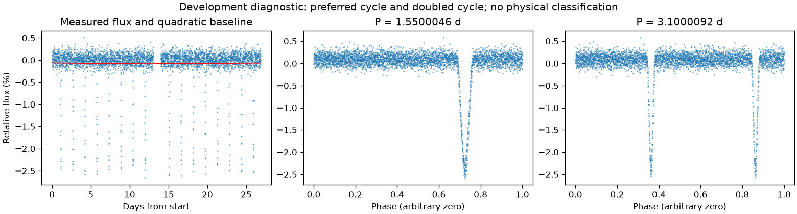
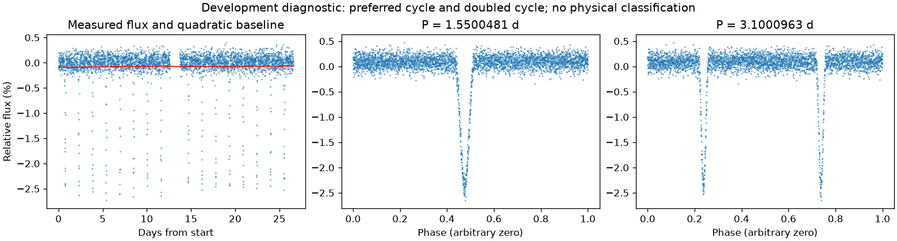

亮度重复，完整绕转周期有歧义
亮度重复周期约 1.55002636 天。仍保留完整绕转周期的歧义。
第二版周期：1.5500045767189385 天；状态：half_double_ambiguous。

左图红线是缓慢基线；右面两图去除该基线。若未通过周期要求，两图只展示得分最高的竞争解释。
| 竞争周期（天） | 交替周期预测改善 | 两组各自改善 | 通过初筛 |
|---|---|---|---|
| 1.5500046 | 92.4% | 92.4% / 92.4% | 是 |
| 3.1000092 | 89.9% | 89.8% / 90.1% | 是 |
| 0.1935878 | -51.9% | -407.1% / -10.3% | 否 |
| 0.3871736 | -55.9% | -8.0% / -471.0% | 否 |
| 0.7749625 | -113.2% | -1706.0% / -7.9% | 否 |
“预测改善”衡量用一组周期的形状预测另一组，比只有缓慢基线好多少；负数表示更差。搜索和预测共用了资料，因此这不是可信概率，也不是独立验证。
第二版周期：1.5500481375966602 天；状态：half_double_ambiguous。

左图红线是缓慢基线；右面两图去除该基线。若未通过周期要求，两图只展示得分最高的竞争解释。
| 竞争周期（天） | 交替周期预测改善 | 两组各自改善 | 通过初筛 |
|---|---|---|---|
| 1.5500481 | 92.5% | 92.7% / 92.3% | 是 |
| 3.0997749 | 90.6% | 90.8% / 90.4% | 是 |
| 1.0334728 | 26.2% | 26.2% / 26.2% | 是 |
| 0.5167186 | 26.2% | 26.5% / 26.0% | 是 |
| 0.2581051 | -56.6% | -11.0% / -389.6% | 否 |
| 0.3871309 | -60.6% | -412.8% / -11.6% | 否 |
| 0.7749437 | -107.4% | -9.8% / -1400.3% | 否 |
“预测改善”衡量用一组周期的形状预测另一组，比只有缓慢基线好多少；负数表示更差。搜索和预测共用了资料，因此这不是可信概率，也不是独立验证。